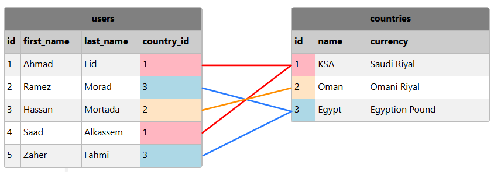

SQLتعيين العامود كمفتاح أجنبي
المفتاح الأجنبي ( Foreign Key )
المفتاح الأجنبي هو العامود الذي نضع فيه قيم مفتاح رئيسي موجود في جدول آخر بهدف ربطهما مع بعض.
فمثلاً في الجدول users, العامود country_id يعتبر مفتاح أجنبي لأن قيمه تشير لقيم العامود id في الجدول countries.

نلاحظ أن قيم العامود country_id يجب أن تشير لقيم العامود id في الجدول countries لتخزين قيم صحيحة.
لضمان أن لا يتم تخزين أرقام خاطئة في العامود country_id يجب تعيين هذا العامود كمفتاح أجنبي بالنسبة للعامود id الموجود في الجدول countries.
عندها في حال تمرير قيمة للحقل country_id غير موجودة في الجدول countries, لن يتم قبولها و سيظهر لك خطأ يخبرك أنه لا يمكنك ذلك.
تعيين المفتاح الرئيسي و المفتاح الأجنبي عند إنشاء الجدول
في الدرس السابق شاهدنا أنه يوجد طريقتين لتحديد المفتاح الرئيسي, الأولى يمكن استخدامها في حال كان المفتاح الرئيسي عبارة عن عامود واحد, و الثانية إستخدامها إجباري في حال كان المفتاح الرئيسي يتكون من أكثر من عامود.
المفتاح الأجنبي كذلك الأمر, حيث يمكن تعيين واحد أو أكثر كمفتاح أجنبي في الجدول.
لتعيين عامود واحد أو أكثر كمفتاح أجنبي في الجدول, يمكننا وضع قيد ( CONSTRAINT ) لتحديده.
هذه الطريقة متاحة في جميع قواعد البيانات و استخدامها سهل لأننا نقوم بتعريف الأعمدة و في النهاية نحدد مفاتيح الجدول.
المميز في هذه الطريقة, أنك في حال قررت إلغاء المفتاح الأجنبي لاحقاً, يمكنك فعل ذلك بكل سهولة لأنك ستعتمد على إسم القيد الذي وضعته بنفسك من أجل إلغائه.
مثال
CREATE TABLE users (
id INT NOT NULL,
first_name VARCHAR(50),
last_name VARCHAR(50),
country_id INT NOT NULL,
-- users كمفتاح رئيسي في الجدول id هنا قمنا بتعيين العامود
PRIMARY KEY (id),
-- countries الموجود في الجدول id هو مفتاح ثانوي بالنسبة للعامود country_id يحدد أن العامود fk_country_user هنا قمنا بوضع قيد بإسم
CONSTRAINT fk_country_user FOREIGN KEY (country_id) REFERENCES countries(id)
);
تعيين المفاتيح في قواعد بيانات MySQL
يمكنك اتباع الطريقة التالية لتعريف المفاتيح مع الإشارة إلى أنه يفضل وضع قيد بشكل يدوي لأن التعامل معه مستقبلاً سيكون أسهل عليك إن أردت ذلك.
مثال
CREATE TABLE users (
id INT NOT NULL,
first_name VARCHAR(50),
last_name VARCHAR(50),
country_id INT NOT NULL,
-- users كمفتاح رئيسي في الجدول id هنا قمنا بتعيين العامود
PRIMARY KEY (id),
-- countries الموجود في الجدول id هو مفتاح ثانوي بالنسبة للعامود country_id هنا قمنا بوضع قيد يحدد أن العامود
FOREIGN KEY (country_id) REFERENCES countries(id)
);
تعيين المفاتيح في قواعد بيانات SQL Server / Oracle / Access
يمكنك اتباع الطريقة التالية لتعريف المفاتيح مع الإشارة إلى أنه يفضل وضع قيد بشكل يدوي لأن التعامل معه مستقبلاً سيكون أسهل عليك إن أردت ذلك.
مثال
CREATE TABLE users (
id INT NOT NULL PRIMARY KEY, -- users كمفتاح رئيسي في الجدول id هنا قمنا بتعيين العامود
first_name VARCHAR(50),
last_name VARCHAR(50),
country_id INT FOREIGN KEY REFERENCES countries(id) -- countries الموجود في الجدول id هو مفتاح ثانوي بالنسبة للعامود country_id يحدد أن العامود fk_country_user هنا قمنا بوضع قيد بإسم
);
تعيين المفتاح الأجنبي بعد إنشاء الجدول
في حال كنت تنوي تعيين عامود واحد كمفتاح أجنبي, يمكنك استخدام الأمر ALTER لتعيينه.
في حال كنت تنوي تعيين أكثر من عامود كمفتاح أجنبي, يجب إضافة CONSTRAINT لتعيينه.
ملاحظة: إضافة CONSTRAINT أمر يحتاج كتابة إستعلام أطول قليلاً و لكن التعامل معه مستقبلاً سيكون أسهل عليك إن أردت ذلك.
المثال الأول
الإستعلام التالي يقوم بتعيين العامود country_id الموجود في الجدول users كمفتاح أجنبي بالنسبة للعامود id الموجود في الجدول countries.
الإستعلام
ALTER TABLE users -- users هنا قمنا بتحديد أننا نريد إجراء تعديل على بنية الجدول
ADD FOREIGN KEY (contry_id) REFERENCES countries(id); -- countries الموجود في الجدول id هو عامود أجنبي بالنسبة للعامود country_id هنا قمنا بتحديد أن العامود
المثال الثاني
الإستعلام التالي يقوم بتعيين العامود country_id الموجود في الجدول users كمفتاح أجنبي بالنسبة للعامود id الموجود في الجدول countries.
الإستعلام
ALTER TABLE users -- users هنا قمنا بتحديد أننا نريد إجراء تعديل على بنية الجدول
ADD CONSTRAINT fk_country_user -- users و countries للإشارة إلى أنه مفتاح أجنبي بين الجدولين fk_country_user هنا قمنا بوضع قيد إسمه
FOREIGN KEY (country_id) REFERENCES countries(id); -- countries الموجود في الجدول id يستخدم قيم العامود country_id هنا قمنا بتحديد أن العامود
حذف قيد المفتاح الأجنبي
طريقة إلغاء قيد ( CONSTRAINT ) المفتاح الأجنبي الذي قمت بتعيينه سابقاً, تختلف من قاعدة بيانات لأخرى.
في قواعد بيانات MySQL
ALTER TABLE table_name
DROP FOREIGN KEY fk_constraint_name;
الإستعلام التالي يقوم بإلغاء قيد مفتاح أجنبي إسمه fk_country_user إفترضنا أنه موضوع في الجدول users.
مثال
ALTER TABLE users
DROP FOREIGN KEY fk_country_user;
في قواعد بيانات SQL Server / Oracle / Access
ALTER TABLE table_name
DROP CONSTRAINT fk_constraint_name;
الإستعلام التالي يقوم بإلغاء قيد مفتاح أجنبي إسمه fk_country_user إفترضنا أنه موضوع في الجدول users.
مثال
ALTER TABLE users
DROP CONSTRAINT fk_country_user;

 محرر الويب
محرر الويب نظام الألوان
نظام الألوان محول الوحدات
محول الوحدات محلل عناوين الشبكات
محلل عناوين الشبكات